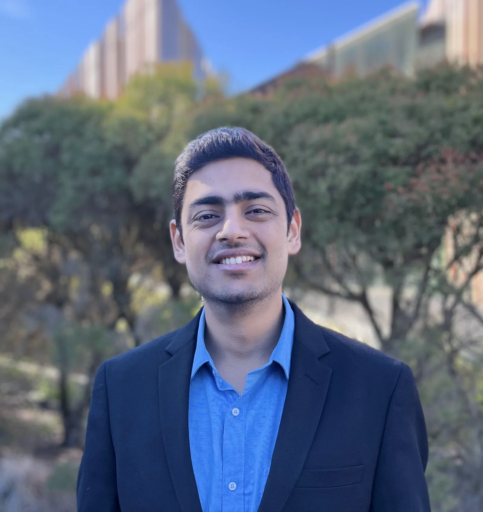
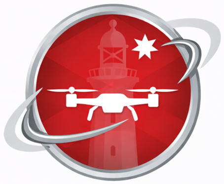
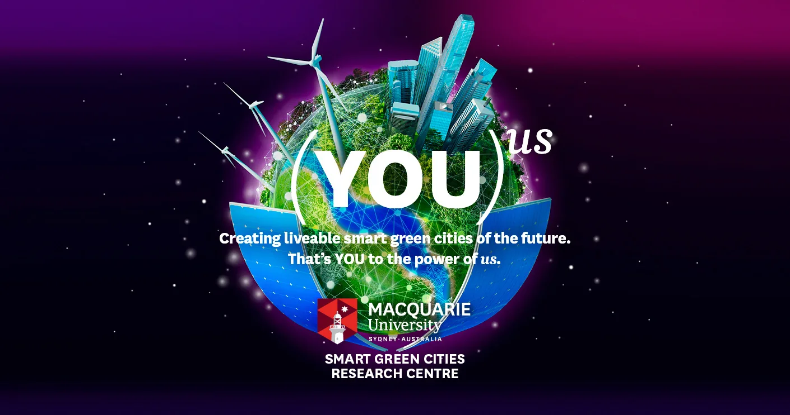

About Me


I'm Avishkar Seth, a Robotics Research Engineer at Macquarie University specializing in aerial autonomy, avionics, and physical sensing systems. I turn complex theory into field-ready hardware—taking systems off the bench, testing under real constraints, and bridging research and commercial impact. Driven by relentless curiosity and a bias for physical reality, I’m always open to high-leverage collaborations in robotics, hard tech, and applied engineering.
I also lead Dronergy, a startup commercialising mid-air battery swapping for drones.
Music |
Photography |
Favourite Shows |
Travel |
Science & Tech |
Nature & Universe |
Gaming
Skills
Educational Lineage
Worked on Wearable Sensors and Computer Vision Applications.
Worked on Sensors, Robotics, and IoT based Smart City Project.

Worked on embedded systems, robotics, and power electronics.